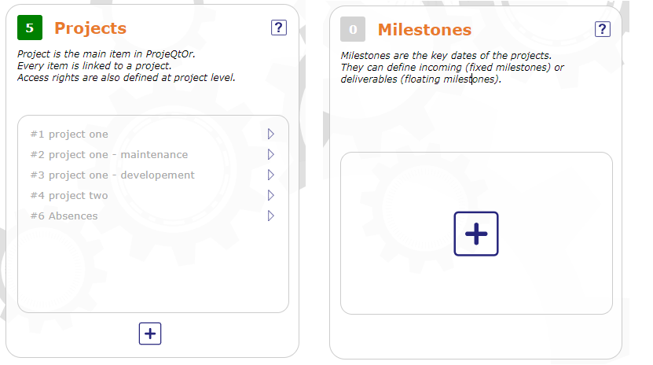

Guide de démarrage¶
Le Guide de démarrage vous aide à démarrer une toute nouvelle session encore vide.
Cela vous permet d’ajouter les éléments principaux nécessaires pour commencer à planifier vos projets.

Écran du guide de démarrage¶
Lorsque vous n’avez pas encore ajouté d’élément, les blocs d’éléments sont vides et indiquent 0 élément
Au fur et à mesure que vous commencez à renseigner des éléments, les blocs afficheront le nombre d’éléments enregistrés et une liste cliquable de ce que vous avez renseigné.

Bloc rempli et Bloc vide¶
Cliquez sur
 pour ajouter un nouvel élément.
pour ajouter un nouvel élément.Cliquez sur
 pour importer un nouvel élément.
pour importer un nouvel élément.
chaque élément enregistré est cliquable et vous accédez directement à l’écran dédié à cet élément.